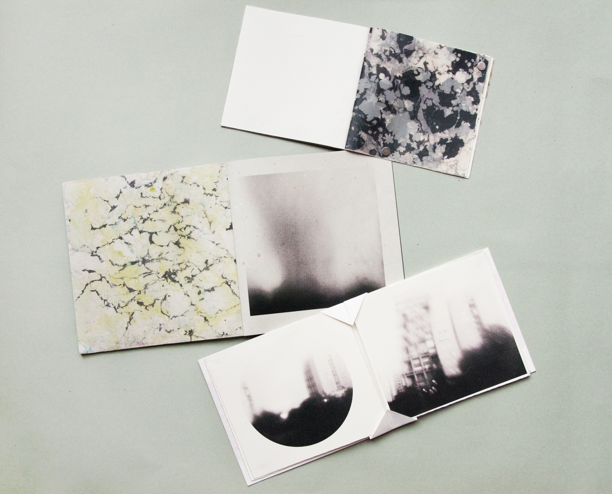
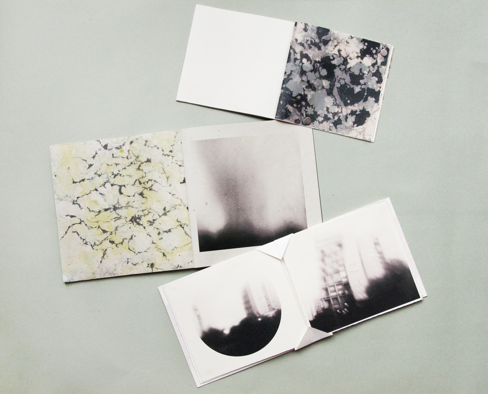

Collection of photographic artist's book
Collezione di romanzi di autori giapponesi contemporanei
Il tema delle collezioni di libri, in questo caso romanzi, mi affascina moltissimo. Il progetto comprende uno studio di tre proposte che seguono una linea grafica minimale e di impatto, ancora molto poco visibile nell' industria commerciale editoriale italiana, con il fine di attrarre lettori grazie alla sua peculiarità.
Caratteristiche visuali
Il filo conduttore che lega la serie di libri è l'elemento visuale in copertina che ricorda la bandiera giapponese, il colore e le illustrazioni danno dunque indivualità al singolo, allo stesso tempo descrivono parzialmente la storia.
Questa collezione è stata pensata per un pubblico giovane, molto interessato alla letteratura giapponese, che è attento ai disegni più minimalisti.